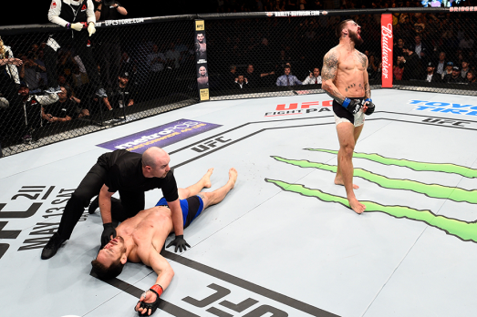

Punten
Een wedstrijd wordt meestal beslist/beëindigd door opgave van de tegenstander, die aan zijn tegenstander verbaal of via (driemaal of meer) afkloppen aangeeft niet meer verder te kunnen/willen vechten. Door een knock-out (K.O.), een vechter gaat na een toegestane klap door de tegenstander neer en is bewusteloos of niet in staat direct het gevecht te hervatten. Een technische knock-out (T.K.O.), het gevecht wordt door de scheidsrechter beëindigd, als deze van mening is dat de vechter zich niet meer kan verdedigen; als waarschuwingen aan het adres van een vechter om zijn vechthouding/verdediging te verbeteren niet worden opgevolgd (doorgaans worden er twee waarschuwingen met tussenpoos van vijf seconden gegeven); als een bij het gevecht aanwezige arts het onverantwoord vindt dat een vechter de wedstrijd voortzet als gevolg van een blessure. Een jurybeslissing, afhankelijk van de score eindigt de wedstrijd en wordt de winnaar gekozen of geroepen tot gelijkspel.
Er is een tienpuntensysteem van toepassing op alle UFC-gevechten; drie juryleden noteren elke ronde een winnaar, die tien punten krijgt, de verliezer van een ronde krijgt negen punten of minder. Als de ronde gelijk is, krijgen beide vechters tien punten. In New Jersey mag de verliezer niet minder dan zeven punten krijgen, in andere staten is het ongewoon om een vechter minder dan zeven punten toe te kennen.
